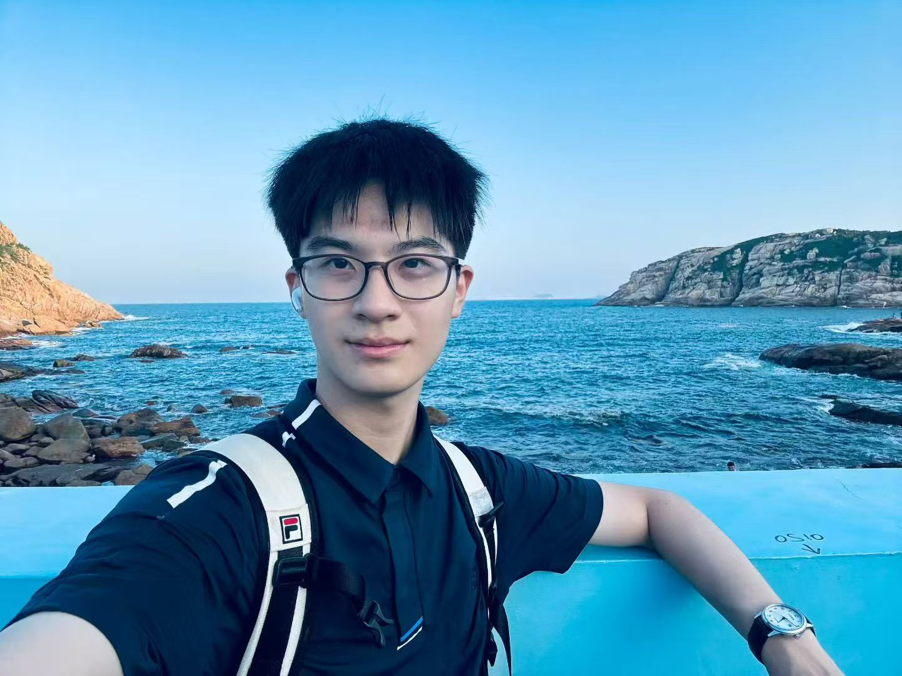

LIU Xinran
About Me
I am a Computer Science undergraduate at The Chinese University of Hong Kong, with a strong foundation in mathematics and a growing research focus on multimodal AI. My recent work spans GraphRAG for traffic prediction, branch-and-bound solvers, and improving spatial reasoning in multimodal large language models through self-evolution pipelines.
Email: liuaeronix[AT]gmail.com / 1155233368[AT]link.cuhk.edu.hk
GitHub: Aeronix-Liu
Education
- 2024/09 – Present BSc in Computer Science, The Chinese University of Hong Kong
- 2027/02 – 2027/08 Exchange semester, ETH Zurich (upcoming)
- 2025/07 Exchange, Utrecht University (United College GOAL Program)
- 2018 – 2024 Shenzhen Middle School (Junior & Senior High)
Projects
- 2026/05 – Present Improve Spatial Reasoning for MLLM via Self-Evolution — Research intern, CUHK MMLab. A self-evolution pipeline with cold-start SFT to strengthen agentic spatial reasoning; evaluated on VSI-Bench, SPAR-Bench, and MAZE.
- 2026/04 – 2026/05 Linear Optimization Solver & BnB Research [code]. Implemented and compared BFS / DFS branch-and-bound against exhaustive search for binary integer programs.
- 2025/10 – 2025/11 CIFAR-10 Image Classifier — Course project. A linear image classifier on CIFAR-10.
- 2025/06 – 2025/08 Multimodal GraphRAG for Traffic Prediction — Summer research. A graph retrieval-augmented generation framework integrating dynamic GNNs and LLMs for spatiotemporal traffic forecasting.
- 2024/10 – 2024/11 Checker Game & Intelligent Robot [code]. A checkers game with PvP / PvE modes and an AI opponent.
- Bayesian Matrix Factorization [code] — Course project. Variational inference for movie rating prediction on MovieLens.
Awards
- 2026/07 Gold Award of CSE Outstanding Academic Performance
- 2026/07 Dean’s List 2025–26, Faculty of Engineering
- 2025/10 Pang Ching Cheung Scholarship, United College
- 2025/07 Dean’s List 2024–25, Faculty of Engineering
- 2023/05 Outstanding Student Leader in Guangdong Province
- 2023/01 AMC12 Global Honor Roll of Distinction
- 2022/11 First Prize, National High School Mathematics Competition (Guangdong)
Activities
- 2025/03 – 2026/03 Information Secretary, United College Mainland Student Association
- 2025/08 A-Helper, Mainland Undergraduate Association Orientation Camp